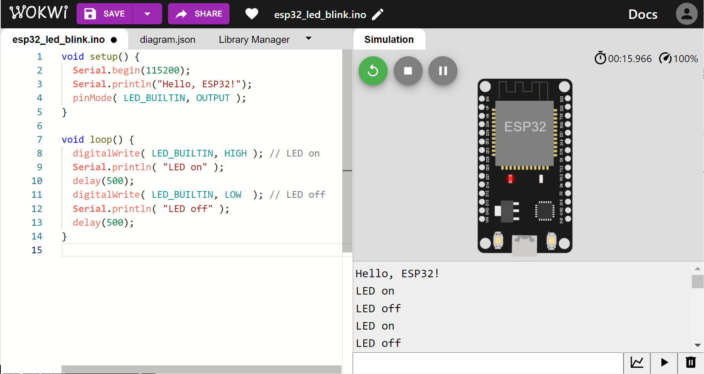

การเขียนโปรแกรมไมโครคอนโทรลเลอร์ Arduino-ESP32 ด้วย Wokwi Simulator (ตอนที่ 1)#
▷ Arduino - ESP32 - Wokwi#
บทความนี้นำเสนอซอฟต์แวร์ Wokwi Online Simulator สำหรับการเขียนโค้ดด้วยภาษา C/C++ ตามรูปแบบของ Arduino โดยเลือกใช้บอร์ดไมโครคอนโทรลเลอร์ ESP32 สำหรับการสาธิต และตรวจสอบการทำงานของโค้ดด้วยวิธีการจำลองการทำงานบนหน้าเว็บเบราว์เซอร์
ก่อนอื่นมาทำความรู้จักกับสามสิ่งต่อไปนี้
- Arduino
- ESP32
- Wokwi
Arduino#
Arduino หมายรวมถึง การกำหนดรูปแบบในการเขียนโปรแกรมด้วยภาษา C/C++ เรียกว่า Arduino API (Application Programmiong Interface) หรือ อาจเรียกว่า Arduino Language Reference โปรแกรมหรือโค้ดที่เป็นไปตามรูปแบบของ Arduino สามารถนำไปคอมไพล์แล้วนำไปอัปโหลดไปยังบอร์ด Arduino จะถูกเรียกว่า Arduino Sketch
ซอฟต์แวร์ของ Arduino มีหลายรูปแบบ และใช้สำหรับการพัฒนาระบบสมองกลฝังตัว (Embedded Systems) ที่มีชิปไมโครคอนโทรลเลอร์เป็นตัวประมวลผล โดยทั่วไปก็จัดอยู่ในประเภท Open Source มีการแชร์โค้ดไว้ใน Github เช่น Arduino IDE, Arduino Cores, Arduino Libraries และซอฟต์แวร์ที่มีการให้บริการในระบบ Arduino Cloud นอกจากซอฟต์แวร์แล้ว ยังมีส่วนที่เป็นฮาร์ดแวร์ซึ่งรองรับการเขียนโปรแกรมตามรูปแบบของ Arduino API และมีการเผยแพร่ไฟล์ในการออกแบบ หรือกล่าวได้ว่าเป็น Arduino-Compatible Open Hardware
โดยทั่วไปแล้ว ฮาร์ดแวร์สำหรับ Arduino คือ บอร์ดไมโครคอนโทรลเลอร์ที่มีการเลือกใช้ชิปตัวประมวลผลหลายรูปแบบ เช่น ขนาด 8 บิต และ 32 บิต เป็นต้น ตัวอย่างบอร์ดที่มีตัวประมวลผล AVR (8-bit) ได้แก่ บอร์ด Arduino Uno, Nano, MEGA และบอร์ดที่มีตัวประมวลผล 32 บิต ได้แก่ Arduino MKR Family, Arduino Pro Portenta Family เป็นต้น ในปัจจุบันก็มีบอร์ดไมโครคอนโทรลเลอร์จากนักพัฒนาหรือผู้ผลิตรายอื่นที่สามารถนำมาใช้ และเขียนโปรแกรมด้วยซอฟต์แวร์ตามรูปแบบของ Arduino ได้
→ แนะนำให้อ่านบทความเกี่ยวกับ Arduino ได้จากบทความภาษาไทย: "Arduino & Embedded Systems: อาร์ดุยโนสำหรับการเรียนรู้ระบบสมองกลฝังตัว"
ESP32#
ESP32 เป็นชื่อชิปของบริษัท Espressif Systems ในประเทศจีน จัดอยู่ในประเภท SoC (System-on-a-Chip) หรืออาจจะมองว่าเป็นชิปไมโครคอนโทรลเลอร์ก็ได้ ภายในมีตัวประมวลผลหรือซีพียูขนาด 32 บิต
บริษัท Espressif Systems ได้พัฒนาชิปถัดจากรุ่น ESP32 ออกมาอีกหลายรุ่น เช่น ESP32-S2, ESP32-S3, ESP32-C3 เป็นต้น จุดเด่นของชิป ESP32 คือ ความสามารถในการเชื่อมต่อและสื่อสารผ่านเครือข่ายไร้สาย Wi-Fi และ BLE และสามารถเขียนโปรแกรมตามรูปแบบของ Arduino ดังนั้นจึงได้รับความนิยมอย่างมากสำหรับการใช้งานด้าน IoT (Internet of Things)
สำหรับการเขียนโปรแกรม ESP32 ด้วยภาษา C/C++ ทางบริษัท Espressif Systems ได้พัฒนาซอฟต์แวร์และไลบรารีต่าง ๆ รวมเรียกว่า ESP-IDF (Espressif IoT Developmment Framework) หรืออาจจะมองว่าเป็น SDK (Software Development Kit) สำหรับ ESP32 และในขณะที่เขียนบทความนี้ เวอร์ชันในปัจจุบันของ ESP-IDF คือ v4.4 และตามมาด้วย v5.0
แต่สำหรับผู้เริ่มต้น การใช้ ESP-IDF สำหรับการเขียนโปรแกรมชิปหรือบอร์ด ESP32 ก็อาจยากกว่าการใช้ Arduino ดังนั้นถ้าต้องการเขียนโปรแกรมโดยใช้ Arduino IDE ก็ให้ติดตั้งเพิ่มซอฟต์แวร์ที่เรียกว่า Arduino-ESP32 Core
อีกตัวเลือกหนึ่งคือ การใช้ภาษา Python เช่น MicroPython และ CircuitPython ซึ่งสามารถนำมาใช้กับชิป ESP32 ได้เช่นกัน เหมาะสำหรับผู้ที่มีพื้นฐานการเขียนโปรแกรม Python มาบ้างแล้ว
→ อ่านบทความที่มีเนื้อหาเกี่ยวกับ Espressif ESP32 ได้จากบทความภาษาไทย: "แนะนำ Espressif ESP32 SoCs: ตัวเลือกสำหรับฮาร์ดแวร์และซอฟต์แวร์ "
Wokwi#
❝Wokwi is an online microcontroller simulator built to make it easy to test different code types / platforms like Arduino, MicroPython, Rust, C, and more!❞ — Uri Shaked (the creator of Wokwi)
- เป็นโปรเจกต์ในการพัฒนาซอฟต์แวร์ เริ่มต้นในปีค.ศ. 2019 โดย Uri Shaked นักพัฒนาชาวอิสราเอล และเปิดให้บริการโดยบริษัท CodeMagic Ltd.
- จัดอยู่ในซอฟต์แวร์ประเภท Web App ใช้สำหรับการเขียนโค้ดและจำลองการทำงานของไมโครคอนโทรลเลอร์ เช่น บอร์ด Arduino Uno / Nano / MEGA และ บอร์ด ESP32 เป็นต้น
- ทำงานบนหน้าเว็บเบราว์เซอร์ของผู้ใช้ ดังนั้นจึงไม่จำเป็นต้องติดตั้งโปรแกรมใด ๆ ในเครื่องของผู้ใช้
รูป: หน้าเว็บไซต์ของ Wokwi และตัวอย่างโปรเจกต์สาธิต
รูป: ตัวเลือกบอร์ดไมโครคอนโทรลเลอร์สำหรับการสร้างโปรเจกต์ใหม่
ซอฟต์แวร์ที่เป็นองค์ประกอบสำคัญของโปรเจกต์ Wokwi ได้แก่
- AVR8js JavaScript library ใช้ภาษา TypeScript / JavaScript สำหรับการพัฒนาตัวจำลองการทำงานของซิปไมโครคอนโทรลเลอร์ AVR หรือ เรียกว่า JavaScript-based AVR Simulator ไลบรารีดังกล่าวซึ่งเป็น Open Source ถือว่าเป็นส่วนที่สำคัญสำหรับการทำงานของซอฟต์แวร์ Wokwi Arduino Simulator
- Wokwi Elements
เป็น Graphical Web Components สำหรับอุปกรณ์อิเล็กทรอนิกส์ต่าง ๆ
ที่สามารถนำมาสร้างวงจรเสมือนจริง (Virtual Circuit Prototyping)
และจำลองการทำงานร่วมกันได้ (Interactive Simulation) เช่น บอร์ด Arduino หลอดแอลอีดี (LED) ปุ่มกด (Button) เป็นต้น
- ดูรายการอุปกรณ์ที่ใช้ได้กับ Wokwi Simulator ได้จากเว็บ https://elements.wokwi.com/
- นอกจากซอฟต์แวร์ที่ทำหน้าที่จำลองการทำงานของซีพียูตามชุดคำสั่ง AVR หรือ AVR Simulator
ยังมีตัวจำลองการทำงานสำหรับตัวประมวลผลอื่นอีก ได้แก่
- RP2040 Simulator ที่มีชื่อว่า
rp2040jsเป็นซอฟต์แวร์ Open Source และรองรับการรันคำสั่งโดยใช้เฟิร์มแวร์ของ MicroPython หรือ Circuit Python ได้ - ESP32 Simulator สำหรับชุดคำสั่งตามสถาปัตยกรรมของซีพียูที่มีชื่อว่า Xtensa และ RISC-V
- RP2040 Simulator ที่มีชื่อว่า
รูป: Wokwi Elements: LED (Red)
รูป: Wokwi Elements: Push Button (Green)
ตัวอย่างบอร์ดไมโครคอนโทรลเลอร์ที่สามารถเลือกใช้ได้ใน Wokwi Simulator ได้แก่
- ATmega328P:
wokwi-arduino-uno,wokwi-arduino-nano - ATmega2560:
wokwi-arduino-mega - ATtiny85:
wokwi-attiny85 - RP2040:
wokwi-pi-pico - ESP32:
wokwi-esp32-devkit-v1 - ESP32-S2:
wokwi-esp32-s2-devkitm-1 - ESP32-S3:
wokwi-esp32-s3-devkitc-1 - ESP32-C3:
wokwi-esp32-c3-devkitm-1
การเริ่มต้นสร้างโปรเจกต์ใหม่ใน Wokwi Simulator สำหรับ ESP32#
หากยังไม่เคยใช้งาน Wokwi มาก่อน แนะนำให้ทำขั้นตอน SIGN UP / SIGN IN เพื่อสร้างบัญชีผู้ใช้ และสามารถเลือกใช้บัญชีผู้ใช้ที่มีอยู่แล้ว ได้แก่ Google หรือ Github หรือ Email
เริ่มต้นด้วยการเปิดเว็บเบราว์เซอร์ไปยัง https://wokwi.com/projects/ กดคลิก "+NEW PROJECT" แล้วเลือก ESP32 จากรายการบอร์ดไมโครคอนโทรลเลอร์ หรือไปยัง https://wokwi.com/projects/new/esp32 ก็ได้
รูป: การสร้างโปรเจกต์ใหม่สำหรับบอร์ด ESP32 และเขียนโปรแกรมด้วย Arduino-ESP32 Core
เมื่อได้สร้างโปรเจกต์ใหม่แล้ว จะเห็นว่า มีการสร้างไฟล์สำหรับการเขียนโค้ดมาให้แล้ว แบ่งเป็น Tabs ดังนี้
sketch.inoเป็นไฟล์ Arduino Sketch (.ino) ซึ่งมีฟังก์ชันsetup()และloop()มาให้แล้ว ผู้ใช้สามารถเขียนโค้ดเพิ่มหรือแก้ไขโค้ดได้ นอกจากนั้นยังสามารถตั้งชื่อไฟล์ใหม่ได้ ตามต้องการ (Rename)diagram.jsonเป็นไฟล์ .json ที่ระบุไว้ว่า ในโปรเจกต์มีการใช้ฮาร์ดแวร์ประเภทใดบ้างเป็นองค์ประกอบของวงจร พร้อมกำหนดคุณสมบัติขององค์ประกอบเหล่านั้น- Library Manager เป็นส่วนที่ใช้สำหรับระบุว่า ต้องการนำเข้าไลบรารีของ Arduino ใดบ้าง ด้วยวิธีการเพิ่มชื่อของไลบรารีเหล่านั้น เพื่อนำมาใช้ในโปรเจกต์
จากรายการเมนู จะเห็นว่า มีคำสั่งดังนี้
- "Format code" สำหรับการจัดรูปแบบโค้ด Arduino Sketch โดยอัตโนมัติ
- "Rename" การตั้งชื่อไฟล์ใหม่
- "Delete" การลบไฟล์ในโปรเจกต์
- "+New file..." การสร้างไฟล์ใหม่และเพิ่มเข้าไว้ในโปรเจกต์ เช่น การสร้างไฟล์
.cppหรือ.hเป็นต้น - "Upload file(s) ..." การอัปโหลดไฟล์ที่มีอยู่แล้วในเครื่องผู้ใช้ เข้ามาเพิ่มในโปรเจกต์
นอกจากส่วนที่เกี่ยวข้องกับไฟล์ของโปรเจกต์ บริเวณทางขวามือ มีรูปบอร์ด ESP32 เสมือนจริง มีปุ่มสีเขียว "Start the simulation" เพื่อเริ่มต้นหรือหยุดการจำลองการทำงานโค้ดแบบเสมือนจริง

รูป: การตั้งชื่อใหม่สำหรับ Arduino Sketch แทนที่ชื่อเดิม sketch.ino

รูป: ตัวอย่างไฟล์ diagram.json ของโปรเจกต์
ลองแก้ไขโค้ดตามโค้ดตัวอย่างต่อไปนี้ แล้วทำขั้นตอนจำลองการทำงานของโค้ดสำหรับบอร์ด ESP32
void setup() {
// Initialize the Serial interface, set baudrate to 115200
Serial.begin(115200);
// Send a message to the Serial interface
Serial.println("Hello, ESP32!");
// Configure the onboard LED pin as output
pinMode( LED_BUILTIN, OUTPUT );
}
void loop() {
digitalWrite( LED_BUILTIN, HIGH ); // Turn LED on
Serial.println( "LED on" );
delay(500);
digitalWrite( LED_BUILTIN, LOW ); // Turn LED off
Serial.println( "LED off" );
delay(500);
}
คำอธิบายโค้ด
- โค้ดของ Arduino Sketch โดยทั่วไป จะต้องมีฟังก์ชันที่มีชื่อว่า setup() และ loop() เมื่อโปรแกรมเริ่มต้นทำงาน จะเรียกฟังก์ชัน setup() ให้ทำงานก่อน และทำเพียงรอบเดียว เมื่อจบแล้ว จึงทำคำสั่งต่าง ๆ ของฟังก์ชัน loop() และเมื่อจบหนึ่งรอบแล้ว ก็จะทำฟังก์ชันดังกล่าวซ้ำไปเรื่อย ๆ
Serial.begin(115200);เป็นการเริ่มต้นการทำงานของวงจรที่เรียกว่า UART (Universal Asynchronous Receiver/Transmitter) ที่อยู่ภายใน ESP32 เพื่อใช้สำหรับการสื่อสารข้อมูลแบบบิตอนุกรม (Serial) ผ่านทางพอร์ต USB-to-Serial ของบอร์ด ESP32 ทำให้สามารถรับหรือส่งข้อความระหว่างคอมพิวเตอร์ผู้ใช้กับบอร์ด ESP32 ได้ในขณะโปรแกรมทำงานSerial.println("Hello, ESP32!");เป็นคำสั่งที่ใช้ในการส่งข้อความ จากบอร์ด ESP32 ไปยังคอมพิวเตอร์ของผู้ใช้ผ่านทางพอร์ต USB-to-SerialpinMode(LED_BUILTIN, OUTPUT);เป็นการกำหนดทิศทางของขา Digital I/O ซึ่งต่อกับวงจร LED บนบอร์ด ESP32 ให้เป็นเอาต์พุต และใช้กำหนดสถานะลอจิกของ LEDLED_BUILTINเป็นชื่อหรือสัญลักษณ์ที่ใช้แทนหมายเลขขา Digital I/O ที่มีวงจร LED บนบอร์ด ESP32-DevKit-v1 ถ้าทำเพิ่มประโยคคำสั่งSerial.println(LED_BUILTIN);จะแสดงค่าตัวเลขของLED_BUILTINได้เท่ากับ2ซึ่งหมายความว่า ขา I/O ของวงจร LED บนบอร์ด ESP32-DevKit-v1 ตรงกับขา GPIO-2digitalWrite( LED_BUILTIN, HIGH );เป็นการกำหนดสถานะของ LED บนบอร์ดผ่านทางขา Digital I/O เป็นลอจิก 1 (High)digitalWrite( LED_BUILTIN, LOW );เป็นการกำหนดสถานะของ LED บนบอร์ดผ่านทางขา Digital I/O เป็นลอจิก 0 (Low)delay(500);เป็นการหน่วงเวลาการทำงาน 500 มิลลิวินาที หรือ 0.5 วินาที ก่อนทำคำสั่งที่อยู่ถัดไป
ในส่วนของฟังก์ชัน loop() อาจเขียนโค้ดใหม่ให้สั้นลงได้ดังนี้
void loop() {
static bool state = false;
// Toggle the LED status
state = !state;
digitalWrite( LED_BUILTIN, state );
Serial.printf( "LED %s\n", state ? "on" : "off" );
delay(500);
}
หรือถ้าไม่ใช้คำสั่ง delay() ก็ทำได้ดังนี้
void loop() {
static uint32_t last_update = 0;
static bool state = false;
uint32_t now = millis();
if (now - last_update >= 500) { // Update every 500 msec
// Save the last update timestamp
last_update = now;
// Toggle the LED status
digitalWrite( LED_BUILTIN, state = !state );
Serial.printf( "LED %s\n", state ? "on" : "off" );
}
}
เอกสารสำหรับคำสั่งและการเขียนโค้ด Arduino สำหรับ ESP32 สามารถศึกษาได้จาก: "ESP32 Arduino Core’s documentation" และ "Wokwi - ESP32 Simulation Guide"

รูป: การจำลองการทำงานของโค้ดตัวอย่างสำหรับบอร์ด Espressif ESP32 DevKit
จากผลการจำลองการทำงาน จะเห็นได้ว่า มีข้อความปรากฏซึ่งเกิดจากการคำสั่ง
Serial.println() และส่งข้อความจากการทำงานของ ESP32
รูป: การจำลองการทำงานของโค้ดตัวอย่างสำหรับบอร์ด Espressif ESP32-C3 Mini-1
รูป: การจำลองการทำงานของโค้ดตัวอย่างสำหรับบอร์ด Espressif ESP32-S2 DevKit
▷ กล่าวสรุป#
บทความนี้นำเสนอการใช้งาน Wokwi Online Arduino Simulator เพื่อการทดลองเขียนโค้ด Arduino Sketch ในเบื้องต้น และจำลองการทำงานของโค้ดสำหรับบอร์ดไมโครคอนโทรลเลอร์ ESP32
อ่านบทความ "การเขียนโปรแกรมไมโครคอนโทรลเลอร์ Arduino-ESP32 ด้วย Wokwi Simulator": ตอนที่ 2
This work is licensed under a Creative Commons Attribution-ShareAlike 4.0 International License.
Created: 2022-11-12 | Last Updated: 2023-01-07